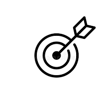

EcoFusion Hub
Innovating solutions for Greener Future
Innovating solutions for Greener Future
EcoFusion Hub is a revolutionary platform that bridges the gap between waste generation and repurposing. By leveraging innovative waste transformation solutions, we empower farmers, manufacturers, and consumers to contribute to a circular economy and create a more sustainable world.

Our mission is to lead the global movement towards a zero-waste future by transforming agricultural and cityscape waste into valuable, eco-friendly products. Through collaboration and innovation, we aim to reduce environmental pollution, create economic opportunities, and inspire communities to adopt sustainable practices.
We envision a world where waste is no longer a problem, but a valuable resource. A world where communities are empowered to reuse, recycle, and repurpose, fostering a cleaner, greener planet for future generations.